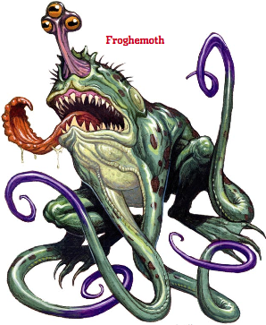

Week 23 - We are all treasure whores, now.
So! The module is effectively done, but there is more that can be done. Just a couple of loose ends.
The party return Lakha to Ekaym. He asks them to destroy the power animating her and Frith does so. Resurrection is almost impossible to come by in Eberron, the realm of the dead being mostly inaccessible except during a rare conjunction, and so he takes her body to be buried.
But bugger him. Next on the agenda is their third fight. Traditionally, in the third round - when only two teams are left - the current holder of the Champion's Belt fights an exhibition match agains a fearsome monster, while the other two teams fight a semifinal. It causes considerable comment, then, when Rough Diamond are scheduled for the monster match. They are to face "Madtooth the Hungry".
Flash attempts to learn more of this foe. From an overheard conversation between a pair of guards, it seems that Madtooth is an enormous Frost Salamander. But no more information is forthcoming.
Meanwhile, Tom has mysteriously dissapeared. Officer Tool, sportingly, agrees to slot in as a replacement in order to keep the witnesses safe. This breaches the terms of the competition, and so Flash uses a Seeming spell to disguise him as Tom.
A bit of rest and a preparing of spells, and all is in order. Next morning, they enter the arena. Madtooth will be brought in in a crate, which will be opened with a rope-and-pulley system. The party cast their medium-duration buffs.
But there is a hold-up! Madtooth is being difficult, and the start of the bout is delayed. And delayed. A full 15 minutes pass, and the crowd begins to heckle. Eventually, the crate emerges. The opening mechanism is prepared, and the 2-minute timer stared. The timer ticks off the final seconds, the levers are pulled, and from the crate emerges Madtooth.
But Madtooth is not a Frost Salamander at all! The guards were a plant, and the delay was deleberate - allowing the party's buffs to expire. They face a swamp creature, which (as the party will soon discover) is actually rather resistant to fire.
Well! Officer Tool wades in - no coward he. The monster attacks him with everything it has, four tentacles, a tongue, and a bite. Officer Tool is killed outright in a matter of moments, his body scattered across the ground. The crowd puts 2 and 2 together and gets 5, supposing that Tom always was a warforged in disguise.
Then Flash gets off his spell - Ray of Dizziness, of course - dizzying the monster to the point that it can make only one attack per round. As the froghemoth stumbles about, Jericho moves in and uses his special new psionic firey whippy things. But the monster's moist hide protects it from the fire, so Jericho gives up and whips out a couple of shortswords. Meanwhile, Arn moves in on the other side.
After that, it's a matter of butchery. The froghemoth dishes out a lot of hurt, but so do the fighter and the rogue. Jericho strikes the killing blow, skwereing the monster's tasty (but no doubt poisonous) giblets.
The party collect their prize, and lounge around for the next day or two, waiting for their final combat against Auric's Warband. Meanwhile, it turns out that Officer Tool was not killed outright after all, but had damage reduction. However, the gods decide that there's way more cheese to be had in a goliath, and so Officer Tool becomes an NPC.
Well, there's not much more to tell. Auric the fighter and Khellek the Mage take the field, along with three flesh golems. Flash disguises each party member as one of the others, aside from Jericho, who is invisible.
In the first round, Khelleck fires a Feeblemind at Arn - disguised as Flash. Arn resists the effect. Next Flash does the same to Khellek - who fails to resist. Frith, meanwhile, has disabled Auric with something or other. And then it's mopping up. The golems are resistant to most things, and can take a lot of damage, but they don't hit all that hard and so the party eventually reduce them.
And that's it. Pretty much. The Champion's Belt and a sizable purse is awarded to the party. They accept it, and start mining the Magic Item Compendium. They seem pleased by the amount of cash they now have, which is a bit of a worry.
But there's more news. Eligos is dead, and his home ransacked. The party investigate, and find a bundle with a note addressed to Allustan. It reads:
“My dear friend Allustan,The note is not finished. Flash sends a message to Allustan in Diamond Lake, who bids him return.
What your adventurers have stumbled into sickens me to my soul. Every new leaf I turn reveals an even darker secret. Here are my notes. You must take them to our one-time master - although I fear that even he may be ill-equipped for what writhes in all of our futures. Until then…”
And so we are done with Sharn. Or are we? Next week we shall be having a break from the campaign, and Bevis (Flash's alter ego) will be running a one shot. I will play Officer Tool, who rejoins the party briefly. I'm also redoing him as an Urban Ranger/Justicar. Should be good.
Shall I do the usual clifhanger? Ok, then: what awaits the party back in Diamond Lake? What might Allustan have discovered? What might he ascertain from Eligos' research? Beats me - I haven't read the next module through yet, although I have a bit of an idea. Stay tuned! And bring rope and climbing gear!